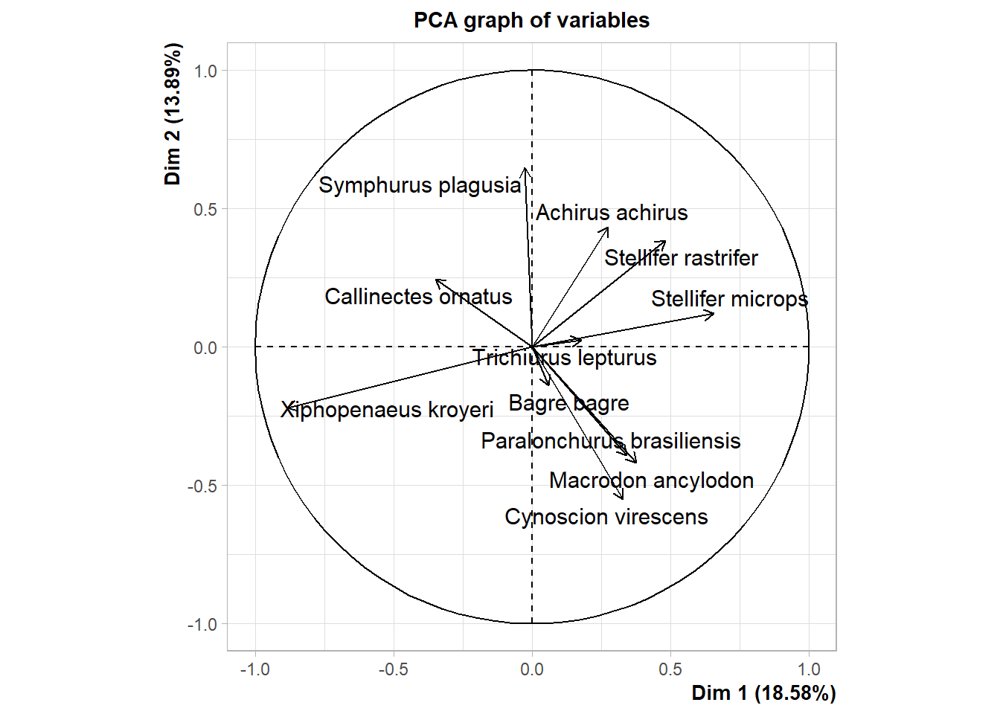
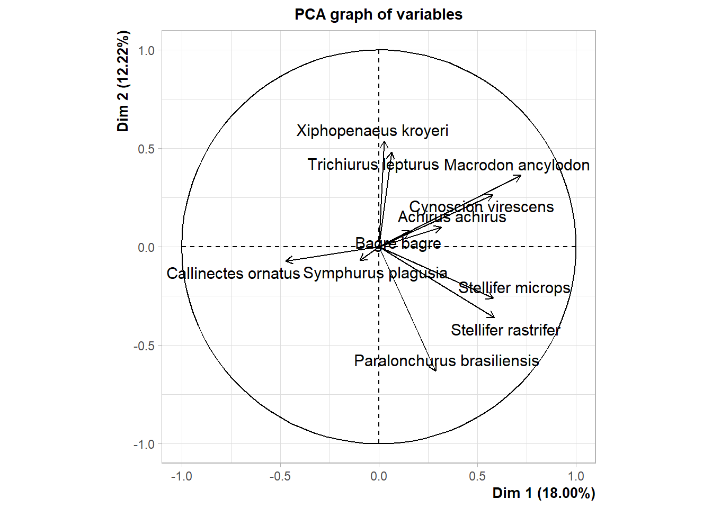
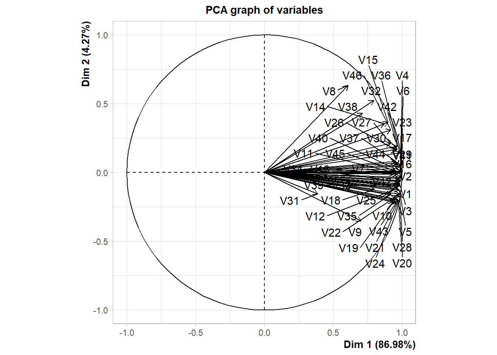

11 Principal Component Analysis (PCA)
Principal components are new variables that are constructed as linear combinations or mixtures of the initial variables. A PCA converts correlations (or lack thereof) among all of the CPUE and Weight proportions into a 2-D graph. Highly correlated CPUE and Weight proportions will cluster together. Also the PCA axis are ranked by order of importance such that differences along the first principal component (PC1) are more important than differences along the second principal component (PC2). This means in clusters = 3 and the difference between clusters on both axes were similar, the clusters along PC1 are deem more different than each other than the clusters along PC2.
11.1 Prop.Weight Models
Paralonchurus brasiliensis Macrodon ancylodon Bagre bagre
Min. :0.0000000 Min. :0.002851 Min. :0.000000
1st Qu.:0.0007246 1st Qu.:0.031118 1st Qu.:0.005845
Median :0.0077088 Median :0.058811 Median :0.015290
Mean :0.0161345 Mean :0.081215 Mean :0.026438
3rd Qu.:0.0180045 3rd Qu.:0.130455 3rd Qu.:0.038828
Max. :0.1271267 Max. :0.253113 Max. :0.164014
Stellifer microps Stellifer rastrifer Achirus achirus Xiphopenaeus kroyeri
Min. :0.00000 Min. :0.00000 Min. :0.0000000 Min. :0.2570
1st Qu.:0.04096 1st Qu.:0.04546 1st Qu.:0.0002315 1st Qu.:0.4859
Median :0.07081 Median :0.10571 Median :0.0017978 Median :0.5655
Mean :0.09190 Mean :0.10953 Mean :0.0048953 Mean :0.5660
3rd Qu.:0.12732 3rd Qu.:0.14382 3rd Qu.:0.0037838 3rd Qu.:0.6543
Max. :0.33241 Max. :0.41878 Max. :0.0679333 Max. :0.9243
Cynoscion virescens Callinectes ornatus Trichiurus lepturus Symphurus plagusia
Min. :0.00000 Min. :0.000000 Min. :0.000000 Min. :0.000000
1st Qu.:0.01174 1st Qu.:0.001940 1st Qu.:0.001923 1st Qu.:0.001034
Median :0.02909 Median :0.004075 Median :0.006844 Median :0.003687
Mean :0.04366 Mean :0.015838 Mean :0.025206 Mean :0.019168
3rd Qu.:0.05992 3rd Qu.:0.010266 3rd Qu.:0.015598 3rd Qu.:0.012541
Max. :0.16724 Max. :0.396213 Max. :0.443339 Max. :0.302415species.pca.2 <- cbind(Row.Names = rownames(species.pca), species.pca)
ggplot(reshape2::melt(species.pca.2, id.vars = "Row.Names"),
aes(x = value)) +
geom_histogram(colour = "black", aes(fill = variable)) +
scale_fill_brewer(palette = "Spectral",
name = "Variable")+
facet_wrap(~variable,
nrow = 3,
scales = "free") +
labs(x = "",
y = "Frequency") +
theme(legend.position = "none") 11.2 PCA

# After
species.pca.trans <- t(species.pca)
pca.dat.trans <- PCA(species.pca.trans,
graph = TRUE,
scale.unit = TRUE)So what were the PCs generated? How well do they capture the overall variation in the dataset? And how are they stored in the object? Let’s take a look.
eigenvalue percentage of variance cumulative percentage of variance
comp 1 2.044 18.583 18.583
comp 2 1.528 13.889 32.472
comp 3 1.371 12.463 44.935
comp 4 1.133 10.299 55.235
comp 5 1.037 9.428 64.662
comp 6 0.974 8.856 73.518
comp 7 0.904 8.219 81.737
comp 8 0.805 7.315 89.053
comp 9 0.701 6.369 95.421
comp 10 0.504 4.579 100.000
comp 11 0.000 0.000 100.000# After
pca.eig.trans <- as.data.frame(format(round(pca.dat.trans$eig,3), scientific = FALSE))
pca.eig.trans eigenvalue percentage of variance cumulative percentage of variance
comp 1 40.882 86.982 86.982
comp 2 2.007 4.270 91.253
comp 3 1.191 2.534 93.786
comp 4 1.001 2.130 95.916
comp 5 0.729 1.551 97.467
comp 6 0.456 0.970 98.437
comp 7 0.385 0.818 99.256
comp 8 0.183 0.390 99.646
comp 9 0.118 0.251 99.897
comp 10 0.048 0.103 100.000# Before
pca.eig$index <- as.factor(1:nrow(pca.eig))
pca.eig$index.cont <- 1:nrow(pca.eig)
nb.cols <- 11
mycolors <- colorRampPalette(rev(brewer.pal(8, "YlGnBu")))(nb.cols)
#Scree plot
ggplot(pca.eig,
aes(x = index,
y = as.numeric(`percentage of variance`))) +
geom_bar(stat = "identity",
aes(fill = index),
colour = "black") +
geom_path(aes(x = index.cont,
group = 1),
size = 1,
colour = "Gray50") +
geom_point(size = 3) +
labs(x = "Principal Components",
y = "Percentage of Variance Explained") +
scale_fill_manual(values = mycolors) +
theme_bw(base_size = 15) +
theme(legend.position = "none")# After
pca.eig.trans$index <- as.factor(1:nrow(pca.eig.trans))
pca.eig.trans$index.cont <- 1:nrow(pca.eig.trans)
nb.cols <- 10
mycolors <- colorRampPalette(rev(brewer.pal(8, "YlGnBu")))(nb.cols)
#Scree plot
pca.eig.trans %>%
ggplot(aes(x = index,
y =as.numeric(`percentage of variance`))) +
geom_bar(stat = "identity",
aes(fill = index),
colour = "black") +
geom_path(aes(x = index.cont,
group = 1),
size = 1,
colour = "Gray50") +
geom_point(size = 3) +
labs(x = "Principal Components",
y = "Percentage of Variance Explained") +
scale_fill_manual(values = mycolors) +
theme_bw(base_size = 15) +
theme(legend.position = "none")
Dim.1 Dim.2 Dim.3 Dim.4
Paralonchurus brasiliensis 5.75 10.10 0.22 12.29
Macrodon ancylodon 6.92 11.45 20.41 11.66
Bagre bagre 0.17 1.27 6.15 0.43
Stellifer microps 21.04 0.97 2.65 10.17
Stellifer rastrifer 11.40 9.66 11.22 1.62
Achirus achirus 3.67 12.27 0.69 21.51
Xiphopenaeus kroyeri 38.26 3.18 3.35 0.85
Cynoscion virescens 5.26 19.78 6.11 14.22
Callinectes ornatus 5.95 3.88 1.56 13.12
Trichiurus lepturus 1.53 0.04 45.38 2.49
Symphurus plagusia 0.04 27.38 2.26 11.64pca.contrib$var <-
row.names(pca.contrib) #Turn row names into a variable
pca.contrib <- reshape2::melt(pca.contrib,id.vars = "var") #Melt the dataset
total.var <-
paste0("(",pca.eig$`percentage of variance`[1:4],"% of Variance)",sep = "") #Extract the % of variance explained by each PC
pca.contrib$variable <- factor(pca.contrib$variable,labels =
paste("PC",1:4," ", total.var,sep = "")) #Append these values to the names of each PC Dim.1 Dim.2 Dim.3 Dim.4 Dim.5
Paralonchurus brasiliensis 0.343 -0.393 -0.055 -0.373 -0.263
Macrodon ancylodon 0.376 -0.418 0.529 0.363 -0.055
Bagre bagre 0.060 -0.139 -0.290 0.069 0.793
Stellifer microps 0.656 0.121 -0.191 -0.340 -0.232
Stellifer rastrifer 0.483 0.384 -0.392 -0.135 0.234
Achirus achirus 0.274 0.433 -0.097 0.494 -0.220
Xiphopenaeus kroyeri -0.884 -0.221 -0.214 0.098 -0.096
Cynoscion virescens 0.328 -0.550 -0.289 0.401 -0.152
Callinectes ornatus -0.349 0.244 0.146 -0.386 -0.202
Trichiurus lepturus 0.177 0.025 0.789 -0.168 0.316
Symphurus plagusia -0.027 0.647 0.176 0.363 -0.071for (i in 1:nrow(pca.contrib))
{
pca.contrib$dir[i] <- pca.coord[which(row.names(pca.coord) == pca.contrib$var[i]),
grep(as.numeric(substr(pca.contrib$variable[i],3,3)),names(pca.coord))] >
0
}
pca.contrib var variable value dir
1 Paralonchurus brasiliensis PC1 ( 18.583% of Variance) 5.75 TRUE
2 Macrodon ancylodon PC1 ( 18.583% of Variance) 6.92 TRUE
3 Bagre bagre PC1 ( 18.583% of Variance) 0.17 TRUE
4 Stellifer microps PC1 ( 18.583% of Variance) 21.04 TRUE
5 Stellifer rastrifer PC1 ( 18.583% of Variance) 11.40 TRUE
6 Achirus achirus PC1 ( 18.583% of Variance) 3.67 TRUE
7 Xiphopenaeus kroyeri PC1 ( 18.583% of Variance) 38.26 FALSE
8 Cynoscion virescens PC1 ( 18.583% of Variance) 5.26 TRUE
9 Callinectes ornatus PC1 ( 18.583% of Variance) 5.95 FALSE
10 Trichiurus lepturus PC1 ( 18.583% of Variance) 1.53 TRUE
11 Symphurus plagusia PC1 ( 18.583% of Variance) 0.04 FALSE
12 Paralonchurus brasiliensis PC2 ( 13.889% of Variance) 10.10 FALSE
13 Macrodon ancylodon PC2 ( 13.889% of Variance) 11.45 FALSE
14 Bagre bagre PC2 ( 13.889% of Variance) 1.27 FALSE
15 Stellifer microps PC2 ( 13.889% of Variance) 0.97 TRUE
16 Stellifer rastrifer PC2 ( 13.889% of Variance) 9.66 TRUE
17 Achirus achirus PC2 ( 13.889% of Variance) 12.27 TRUE
18 Xiphopenaeus kroyeri PC2 ( 13.889% of Variance) 3.18 FALSE
19 Cynoscion virescens PC2 ( 13.889% of Variance) 19.78 FALSE
20 Callinectes ornatus PC2 ( 13.889% of Variance) 3.88 TRUE
21 Trichiurus lepturus PC2 ( 13.889% of Variance) 0.04 TRUE
22 Symphurus plagusia PC2 ( 13.889% of Variance) 27.38 TRUE
23 Paralonchurus brasiliensis PC3 ( 12.463% of Variance) 0.22 FALSE
24 Macrodon ancylodon PC3 ( 12.463% of Variance) 20.41 TRUE
25 Bagre bagre PC3 ( 12.463% of Variance) 6.15 FALSE
26 Stellifer microps PC3 ( 12.463% of Variance) 2.65 FALSE
27 Stellifer rastrifer PC3 ( 12.463% of Variance) 11.22 FALSE
28 Achirus achirus PC3 ( 12.463% of Variance) 0.69 FALSE
29 Xiphopenaeus kroyeri PC3 ( 12.463% of Variance) 3.35 FALSE
30 Cynoscion virescens PC3 ( 12.463% of Variance) 6.11 FALSE
31 Callinectes ornatus PC3 ( 12.463% of Variance) 1.56 TRUE
32 Trichiurus lepturus PC3 ( 12.463% of Variance) 45.38 TRUE
33 Symphurus plagusia PC3 ( 12.463% of Variance) 2.26 TRUE
34 Paralonchurus brasiliensis PC4 ( 10.299% of Variance) 12.29 FALSE
35 Macrodon ancylodon PC4 ( 10.299% of Variance) 11.66 TRUE
36 Bagre bagre PC4 ( 10.299% of Variance) 0.43 TRUE
37 Stellifer microps PC4 ( 10.299% of Variance) 10.17 FALSE
38 Stellifer rastrifer PC4 ( 10.299% of Variance) 1.62 FALSE
39 Achirus achirus PC4 ( 10.299% of Variance) 21.51 TRUE
40 Xiphopenaeus kroyeri PC4 ( 10.299% of Variance) 0.85 TRUE
41 Cynoscion virescens PC4 ( 10.299% of Variance) 14.22 TRUE
42 Callinectes ornatus PC4 ( 10.299% of Variance) 13.12 FALSE
43 Trichiurus lepturus PC4 ( 10.299% of Variance) 2.49 FALSE
44 Symphurus plagusia PC4 ( 10.299% of Variance) 11.64 TRUEggplot(pca.contrib,aes(x = var,
y = value)) +
geom_hline(yintercept = 100 / length(unique(pca.contrib$var)),
linetype = "dashed") +
geom_bar(stat = "identity",
aes(fill = var),
colour = "black") +
facet_wrap(~variable,
nrow = 2,
scales = "free") +
# geom_label(aes(label = var,colour = dir)) +
scale_colour_manual(values = c("red","black"))+
scale_fill_brewer(palette = "Spectral") +
theme_bw(base_size = 15) +
labs(x = NULL, y = "% Contribution to Principal Component", fill = " ") +
theme(axis.text.x = element_blank(),
legend.position = "bottom") +
guides(fill = guide_legend(override.aes =
aes(label = " "), nrow = 4)) 11.3 CPUE Models
# Renaming data
species.pca.2 <- species.cor.3
# Printing summary of variables
summary(species.pca.2) Paralonchurus brasiliensis Macrodon ancylodon Bagre bagre
Min. :0.00000 Min. : 0.1975 Min. : 0.0000
1st Qu.:0.05017 1st Qu.: 2.0452 1st Qu.: 0.4175
Median :0.54000 Median : 4.4133 Median : 1.1275
Mean :1.15831 Mean : 6.6959 Mean : 1.9998
3rd Qu.:1.29774 3rd Qu.: 9.8163 3rd Qu.: 2.9458
Max. :9.73250 Max. :21.1257 Max. :13.2245
Stellifer microps Stellifer rastrifer Achirus achirus Xiphopenaeus kroyeri
Min. : 0.000 Min. : 0.000 Min. :0.0000 Min. : 10.71
1st Qu.: 3.085 1st Qu.: 2.896 1st Qu.:0.0125 1st Qu.: 32.88
Median : 5.900 Median : 8.739 Median :0.1575 Median : 44.01
Mean : 7.769 Mean : 9.365 Mean :0.4012 Mean : 45.41
3rd Qu.:10.810 3rd Qu.:13.644 3rd Qu.:0.3038 3rd Qu.: 51.28
Max. :33.870 Max. :40.992 Max. :4.9553 Max. :145.46
Cynoscion virescens Callinectes ornatus Trichiurus lepturus Symphurus plagusia
Min. : 0.0000 Min. : 0.0000 Min. : 0.0000 Min. : 0.00000
1st Qu.: 0.9841 1st Qu.: 0.1457 1st Qu.: 0.1075 1st Qu.: 0.06026
Median : 2.4430 Median : 0.3718 Median : 0.4005 Median : 0.30398
Mean : 3.5052 Mean : 1.0301 Mean : 2.4355 Mean : 1.65960
3rd Qu.: 4.7189 3rd Qu.: 0.7879 3rd Qu.: 1.4448 3rd Qu.: 1.05889
Max. :14.1000 Max. :21.7650 Max. :50.7136 Max. :32.36166species.pca.3 <- cbind(Row.Names = rownames(species.pca.2), species.pca.2)
ggplot(reshape2::melt(species.pca.3, id.vars = "Row.Names"),
aes(x = value)) +
geom_histogram(colour = "black", aes(fill = variable)) +
scale_fill_brewer(palette = "Spectral",
name = "Variable")+
facet_wrap(~variable,
nrow = 3,
scales = "free") +
labs(x = "",
y = "Frequency") +
theme(legend.position = "none") 11.4 PCA

# After
species.pca.2.trans <- t(species.pca.2)
pca.dat.2.trans <- PCA(species.pca.2.trans,
graph = TRUE,
scale.unit = TRUE)
So what were the PCs generated? How well do they capture the overall variation in the dataset? And how are they stored in the object? Let’s take a look.
eigenvalue percentage of variance cumulative percentage of variance
comp 1 1.980 18.000 18.000
comp 2 1.344 12.219 30.219
comp 3 1.274 11.586 41.805
comp 4 1.168 10.621 52.426
comp 5 1.021 9.280 61.706
comp 6 1.007 9.156 70.862
comp 7 0.887 8.061 78.923
comp 8 0.753 6.846 85.769
comp 9 0.656 5.963 91.732
comp 10 0.554 5.035 96.767
comp 11 0.356 3.233 100.000# After
pca.eig.2.trans <- as.data.frame(format(round(pca.dat.2.trans$eig,3), scientific = FALSE))
pca.eig.2.trans eigenvalue percentage of variance cumulative percentage of variance
comp 1 40.882 86.982 86.982
comp 2 2.007 4.270 91.253
comp 3 1.191 2.534 93.786
comp 4 1.001 2.130 95.916
comp 5 0.729 1.551 97.467
comp 6 0.456 0.970 98.437
comp 7 0.385 0.818 99.256
comp 8 0.183 0.390 99.646
comp 9 0.118 0.251 99.897
comp 10 0.048 0.103 100.000# Before
pca.eig.2$index <- as.factor(1:nrow(pca.eig.2))
pca.eig.2$index.cont <- 1:nrow(pca.eig.2)
nb.cols <- 11
mycolors <- colorRampPalette(rev(brewer.pal(8, "YlGnBu")))(nb.cols)
#Scree plot
ggplot(pca.eig.2,aes(x=index,y=as.numeric(`percentage of variance`))) +
geom_bar(stat = "identity",aes(fill = index),colour = "black") +
geom_path(aes(x = index.cont, group = 1),size = 1,colour = "Gray50") +
geom_point(size = 3) +
labs(x = "Principal Components",
y = "Percentage of Variance Explained") +
scale_fill_manual(values = mycolors) +
theme_bw(base_size = 15) +
theme(legend.position = "none")# After
pca.eig.2.trans$index <- as.factor(1:nrow(pca.eig.2.trans))
pca.eig.2.trans$index.cont <- 1:nrow(pca.eig.2.trans)
nb.cols <- 10
mycolors <- colorRampPalette(rev(brewer.pal(8, "YlGnBu")))(nb.cols)
#Scree plot
ggplot(pca.eig.2.trans,aes(x=index,y=as.numeric(`percentage of variance`))) +
geom_bar(stat = "identity",aes(fill = index),colour = "black") +
geom_path(aes(x = index.cont, group = 1),size = 1,colour = "Gray50") +
geom_point(size = 3) +
labs(x = "Principal Components",
y = "Percentage of Variance Explained") +
scale_fill_manual(values = mycolors) +
theme_bw(base_size = 15) +
theme(legend.position = "none") Dim.1 Dim.2 Dim.3 Dim.4
Paralonchurus brasiliensis 4.18 29.66 12.13 3.42
Macrodon ancylodon 26.17 9.73 1.84 2.30
Bagre bagre 1.25 0.49 5.67 17.21
Stellifer microps 17.03 5.05 1.27 7.53
Stellifer rastrifer 17.42 9.64 9.40 1.81
Achirus achirus 5.07 0.74 17.34 4.88
Xiphopenaeus kroyeri 0.04 21.52 0.13 1.85
Cynoscion virescens 16.87 5.19 6.89 21.05
Callinectes ornatus 11.29 0.39 0.00 0.49
Trichiurus lepturus 0.21 17.23 0.01 38.34
Symphurus plagusia 0.47 0.36 45.32 1.13pca.contrib.2$var <-
row.names(pca.contrib.2) #Turn row names into a variable
pca.contrib.2 <- reshape2::melt(pca.contrib.2,id.vars = "var") #Melt the dataset
total.var <-
paste0("(",pca.eig.2$`percentage of variance`[1:4],"% of Variance)",sep = "") #Extract the % of variance explained by each PC
pca.contrib.2$variable <- factor(pca.contrib.2$variable,labels =
paste("PC",1:4," ", total.var,sep = "")) #Append these values to the names of each PC Dim.1 Dim.2 Dim.3 Dim.4 Dim.5
Paralonchurus brasiliensis 0.288 -0.631 -0.393 0.200 -0.078
Macrodon ancylodon 0.720 0.362 -0.153 0.164 -0.128
Bagre bagre 0.157 0.081 0.269 -0.448 -0.432
Stellifer microps 0.581 -0.261 0.127 0.297 0.200
Stellifer rastrifer 0.587 -0.360 0.346 0.145 0.145
Achirus achirus 0.317 0.100 0.470 -0.239 -0.152
Xiphopenaeus kroyeri 0.028 0.538 0.041 0.147 0.679
Cynoscion virescens 0.578 0.264 -0.296 -0.496 0.120
Callinectes ornatus -0.473 -0.072 0.004 0.076 0.039
Trichiurus lepturus 0.064 0.481 0.012 0.669 -0.490
Symphurus plagusia -0.097 -0.069 0.760 0.115 0.099for (i in 1:nrow(pca.contrib.2))
{
pca.contrib.2$dir[i] <- pca.coord.2[which(row.names(pca.coord) == pca.contrib.2$var[i]),
grep(as.numeric(substr(pca.contrib.2$variable[i],3,3)),names(pca.coord.2))] >
0
}
pca.contrib.2 var variable value dir
1 Paralonchurus brasiliensis PC1 ( 18.000% of Variance) 4.18 TRUE
2 Macrodon ancylodon PC1 ( 18.000% of Variance) 26.17 TRUE
3 Bagre bagre PC1 ( 18.000% of Variance) 1.25 TRUE
4 Stellifer microps PC1 ( 18.000% of Variance) 17.03 TRUE
5 Stellifer rastrifer PC1 ( 18.000% of Variance) 17.42 TRUE
6 Achirus achirus PC1 ( 18.000% of Variance) 5.07 TRUE
7 Xiphopenaeus kroyeri PC1 ( 18.000% of Variance) 0.04 TRUE
8 Cynoscion virescens PC1 ( 18.000% of Variance) 16.87 TRUE
9 Callinectes ornatus PC1 ( 18.000% of Variance) 11.29 FALSE
10 Trichiurus lepturus PC1 ( 18.000% of Variance) 0.21 TRUE
11 Symphurus plagusia PC1 ( 18.000% of Variance) 0.47 FALSE
12 Paralonchurus brasiliensis PC2 ( 12.219% of Variance) 29.66 FALSE
13 Macrodon ancylodon PC2 ( 12.219% of Variance) 9.73 TRUE
14 Bagre bagre PC2 ( 12.219% of Variance) 0.49 TRUE
15 Stellifer microps PC2 ( 12.219% of Variance) 5.05 FALSE
16 Stellifer rastrifer PC2 ( 12.219% of Variance) 9.64 FALSE
17 Achirus achirus PC2 ( 12.219% of Variance) 0.74 TRUE
18 Xiphopenaeus kroyeri PC2 ( 12.219% of Variance) 21.52 TRUE
19 Cynoscion virescens PC2 ( 12.219% of Variance) 5.19 TRUE
20 Callinectes ornatus PC2 ( 12.219% of Variance) 0.39 FALSE
21 Trichiurus lepturus PC2 ( 12.219% of Variance) 17.23 TRUE
22 Symphurus plagusia PC2 ( 12.219% of Variance) 0.36 FALSE
23 Paralonchurus brasiliensis PC3 ( 11.586% of Variance) 12.13 FALSE
24 Macrodon ancylodon PC3 ( 11.586% of Variance) 1.84 FALSE
25 Bagre bagre PC3 ( 11.586% of Variance) 5.67 TRUE
26 Stellifer microps PC3 ( 11.586% of Variance) 1.27 TRUE
27 Stellifer rastrifer PC3 ( 11.586% of Variance) 9.40 TRUE
28 Achirus achirus PC3 ( 11.586% of Variance) 17.34 TRUE
29 Xiphopenaeus kroyeri PC3 ( 11.586% of Variance) 0.13 TRUE
30 Cynoscion virescens PC3 ( 11.586% of Variance) 6.89 FALSE
31 Callinectes ornatus PC3 ( 11.586% of Variance) 0.00 TRUE
32 Trichiurus lepturus PC3 ( 11.586% of Variance) 0.01 TRUE
33 Symphurus plagusia PC3 ( 11.586% of Variance) 45.32 TRUE
34 Paralonchurus brasiliensis PC4 ( 10.621% of Variance) 3.42 TRUE
35 Macrodon ancylodon PC4 ( 10.621% of Variance) 2.30 TRUE
36 Bagre bagre PC4 ( 10.621% of Variance) 17.21 FALSE
37 Stellifer microps PC4 ( 10.621% of Variance) 7.53 TRUE
38 Stellifer rastrifer PC4 ( 10.621% of Variance) 1.81 TRUE
39 Achirus achirus PC4 ( 10.621% of Variance) 4.88 FALSE
40 Xiphopenaeus kroyeri PC4 ( 10.621% of Variance) 1.85 TRUE
41 Cynoscion virescens PC4 ( 10.621% of Variance) 21.05 FALSE
42 Callinectes ornatus PC4 ( 10.621% of Variance) 0.49 TRUE
43 Trichiurus lepturus PC4 ( 10.621% of Variance) 38.34 TRUE
44 Symphurus plagusia PC4 ( 10.621% of Variance) 1.13 TRUEggplot(pca.contrib.2,aes(x = var,
y = value)) +
geom_hline(yintercept = 100 / length(unique(pca.contrib.2$var)),
linetype = "dashed") +
geom_bar(stat = "identity",
aes(fill = var),
colour = "black") +
facet_wrap(~variable,
nrow = 2,
scales = "free") +
# geom_label(aes(label = var,colour = dir)) +
scale_colour_manual(values = c("red","black"))+
scale_fill_brewer(palette = "Spectral") +
theme_bw(base_size = 15) +
labs(x = NULL, y = "% Contribution to Principal Component", fill = " ") +
theme(axis.text.x = element_blank(),
legend.position = "bottom") +
guides(fill = guide_legend(override.aes =
aes(label = " "), nrow = 4)) 11.5 Canonical Correspondence Analysis
11.6 First Approach
# Data
cca.data.all <- species.cor %>%
pivot_wider(names_from = LatinNames,
values_from = CpueKGHR,
values_fill = 0)
# Creating two data frames
cca.1 <- cca.data.all[,7:17]
cca.2 <- cca.data.all[,2:6]
# Fitting model
cca.model <- cca(cca.1, cca.2)
cca.model Call: cca(X = cca.1, Y = cca.2)
Inertia Proportion Rank
Total 0.8608 1.0000
Constrained 0.1379 0.1602 5
Unconstrained 0.7229 0.8398 10
Inertia is scaled Chi-square
Eigenvalues for constrained axes:
CCA1 CCA2 CCA3 CCA4 CCA5
0.06526 0.03722 0.01996 0.01006 0.00539
Eigenvalues for unconstrained axes:
CA1 CA2 CA3 CA4 CA5 CA6 CA7 CA8 CA9 CA10
0.18303 0.16279 0.12756 0.08077 0.05257 0.03636 0.02307 0.02147 0.01908 0.01624
Call:
cca(X = cca.1, Y = cca.2)
Partitioning of scaled Chi-square:
Inertia Proportion
Total 0.8608 1.0000
Constrained 0.1379 0.1602
Unconstrained 0.7229 0.8398
Eigenvalues, and their contribution to the scaled Chi-square
Importance of components:
CCA1 CCA2 CCA3 CCA4 CCA5 CA1 CA2
Eigenvalue 0.06526 0.03722 0.01996 0.01006 0.005387 0.1830 0.1628
Proportion Explained 0.07581 0.04324 0.02318 0.01169 0.006258 0.2126 0.1891
Cumulative Proportion 0.07581 0.11905 0.14223 0.15392 0.160179 0.3728 0.5619
CA3 CA4 CA5 CA6 CA7 CA8 CA9
Eigenvalue 0.1276 0.08077 0.05257 0.03636 0.02307 0.02147 0.01908
Proportion Explained 0.1482 0.09383 0.06106 0.04224 0.02680 0.02494 0.02216
Cumulative Proportion 0.7101 0.80392 0.86499 0.90723 0.93403 0.95897 0.98114
CA10
Eigenvalue 0.01624
Proportion Explained 0.01886
Cumulative Proportion 1.00000
Accumulated constrained eigenvalues
Importance of components:
CCA1 CCA2 CCA3 CCA4 CCA5
Eigenvalue 0.06526 0.03722 0.01996 0.01006 0.005387
Proportion Explained 0.47330 0.26993 0.14473 0.07298 0.039067
Cumulative Proportion 0.47330 0.74323 0.88796 0.96093 1.000000
Scaling 2 for species and site scores
* Species are scaled proportional to eigenvalues
* Sites are unscaled: weighted dispersion equal on all dimensions
Species scores
CCA1 CCA2 CCA3 CCA4 CCA5
Paralonchurus brasiliensis 0.02748 -0.45661 -0.339955 0.019251 -0.21440
Macrodon ancylodon 0.40023 -0.01776 -0.010411 -0.030281 0.14479
Bagre bagre -0.04806 -0.63689 0.205688 0.072250 -0.12975
Stellifer microps -0.07369 0.00381 -0.328803 0.002252 0.06392
Stellifer rastrifer 0.10610 -0.12658 0.177073 0.048232 0.02861
Achirus achirus 0.12384 0.18996 0.193990 0.518130 0.23695
Xiphopenaeus kroyeri -0.08461 0.07303 0.009001 -0.034371 -0.03236
Cynoscion virescens 0.08635 -0.19043 0.167191 -0.187407 0.07792
Callinectes ornatus -0.61593 -0.94948 -0.245892 0.332167 0.08980
Trichiurus lepturus 0.97818 0.20857 -0.090303 0.260045 -0.15359
Symphurus plagusia -0.78019 0.49555 0.210260 0.362214 0.09449
CA1
Paralonchurus brasiliensis 0.34321
Macrodon ancylodon 0.04433
Bagre bagre 0.11078
Stellifer microps 0.17851
Stellifer rastrifer 0.27695
Achirus achirus 0.26715
Xiphopenaeus kroyeri 0.02714
Cynoscion virescens 0.34832
Callinectes ornatus -1.82833
Trichiurus lepturus -1.97265
Symphurus plagusia -0.46344
Site scores (weighted averages of species scores)
CCA1 CCA2 CCA3 CCA4 CCA5 CA1
sit1 -1.14349 -0.50504 0.1846 -0.46079 -1.8566 -0.114983
sit2 -0.89116 -0.29325 0.3574 -1.97345 -3.2211 0.020595
sit3 -0.48955 -0.80566 0.4921 -2.63489 -3.5810 0.445352
sit4 -0.27425 -1.08299 2.1065 -1.79200 -2.6571 0.442834
sit5 -0.58259 -0.29484 1.3430 -3.57880 -3.2227 0.170931
sit6 0.13383 -0.99771 1.1192 -1.48150 0.4699 0.217833
sit7 -0.53095 -2.49138 2.9573 0.13484 -5.0015 0.595964
sit8 0.59811 -2.29944 1.0477 1.31118 0.6749 0.939792
sit9 -4.57600 -9.06281 -4.4513 12.50583 4.3489 -4.095687
sit10 2.08400 0.62702 -1.5283 1.88912 -5.6665 -1.081932
sit11 0.30265 -1.38338 -1.3414 -3.32251 0.9048 0.446470
sit12 0.06562 -1.97550 -0.8959 -1.70124 -1.1606 0.163767
sit13 -0.21380 -1.07853 -0.5063 -2.84298 -0.6721 0.431443
sit14 -1.00722 0.80462 -2.7153 1.49947 3.5311 0.004316
sit15 0.32465 -0.67692 -1.9410 0.59683 1.5623 0.216871
sit16 -0.74884 0.82809 -0.1441 -1.84374 -1.9804 0.049954
sit17 -1.02420 0.07255 -1.1221 -0.17331 -0.6887 0.034097
sit18 -3.84353 3.89551 4.8438 10.63238 2.5850 -0.940138
sit19 0.28910 -0.57107 -2.5836 -1.68788 -5.0735 0.215862
sit20 -0.14895 0.50449 0.2487 -2.34332 -1.6913 -0.125760
sit21 0.16704 1.62179 -0.4030 -0.68424 -5.1611 -0.584864
sit22 -0.26396 1.21016 -1.3877 -1.48359 -2.6144 -0.164048
sit23 -1.00364 -0.07507 -1.2468 0.13086 -0.1580 -0.158986
sit24 -0.94527 1.53582 0.1627 -2.21812 -5.2719 -0.329603
sit25 1.31255 0.33007 0.5471 -2.36513 3.5509 0.381892
sit26 1.08343 0.17184 1.1433 0.15498 1.5612 0.324346
sit27 0.09485 -0.70095 1.7906 -0.06341 -0.9763 0.830737
sit28 -0.79795 0.78952 -0.2374 -1.36536 -2.5259 -0.033270
sit29 -0.80376 0.90676 0.8261 -2.03650 -3.2173 0.349068
sit30 0.52285 -0.81654 0.3805 -0.51493 3.6564 0.426326
sit31 6.92789 2.62070 -1.9958 11.53778 -9.3936 -4.265626
sit32 0.77136 -0.26184 -1.9679 0.55060 6.3488 0.519242
sit33 1.40761 -0.02301 0.3661 0.15286 -0.7246 -0.088963
sit34 0.50153 -0.11390 0.7323 -2.20137 2.3162 0.400273
sit35 -1.34872 2.18712 1.6183 3.87961 5.4239 0.142341
sit36 -0.14322 -0.38369 -1.2799 -0.36894 -0.3691 0.571666
sit37 0.41910 -0.25396 1.4695 -1.85079 6.0640 1.036438
sit38 0.46482 -0.58002 -5.0107 1.30168 1.8613 0.303934
sit39 -1.51178 2.03833 1.7996 5.39848 3.7387 0.312827
sit40 -0.55579 0.72642 -3.2175 -2.48851 0.3644 0.447474
sit41 -0.21651 0.36412 1.0343 -1.60754 -0.2850 0.831888
sit42 0.15778 -0.77482 -0.1977 1.48721 4.4656 0.248139
sit43 0.09229 -0.15439 1.8360 -4.54190 0.7999 0.040881
sit44 0.74819 -0.36323 0.2234 -3.07641 4.3228 0.418975
sit45 -0.22046 -0.20538 1.2404 -4.05603 1.4417 0.207515
sit46 -0.44369 -0.16170 0.8793 1.52004 0.9238 0.159277
sit47 0.18946 0.21543 2.2185 -3.01961 1.7421 0.306350
Site constraints (linear combinations of constraining variables)
CCA1 CCA2 CCA3 CCA4 CCA5 CA1
con1 0.51721 -0.643712 1.54087 -0.59303 -0.68887 -0.114983
con2 -0.64694 -0.770861 1.20300 -0.70651 0.93218 0.020595
con3 0.51721 -0.643712 1.54087 -0.59303 -0.68887 0.445352
con4 0.30181 -0.413890 2.41682 0.01281 -0.79799 0.442834
con5 -0.86234 -0.541039 2.07895 -0.10068 0.82306 0.170931
con6 -0.64694 -0.770861 1.20300 -0.70651 0.93218 0.217833
con7 -0.04936 -2.263123 -0.20974 0.83946 -1.13950 0.595964
con8 -0.04936 -2.263123 -0.20974 0.83946 -1.13950 0.939792
con9 -1.21351 -2.390272 -0.54761 0.72598 0.48155 -4.095687
con10 0.31633 -3.786772 -0.70860 1.23816 -0.78340 -1.081932
con11 -1.21351 -2.390272 -0.54761 0.72598 0.48155 0.446470
con12 -1.21351 -2.390272 -0.54761 0.72598 0.48155 0.163767
con13 0.08659 -0.362700 -1.71832 -1.06368 -1.29007 0.431443
con14 -1.26040 0.271976 -1.80676 -1.37651 0.15293 0.004316
con15 -0.34420 0.096944 0.03358 0.14799 -1.50831 0.216871
con16 -1.69119 0.731619 -0.05486 -0.16484 -0.06530 0.049954
con17 -0.74244 1.088590 1.15896 0.55448 -1.79547 0.034097
con18 -1.90659 0.961441 0.82110 0.44100 -0.17442 -0.940138
con19 0.19576 0.778133 -1.60287 -0.84404 -1.24656 0.215862
con20 -1.39918 1.110628 -0.18884 0.25415 0.15625 -0.125760
con21 -0.23503 1.237777 0.14903 0.36763 -1.46480 -0.584864
con22 -0.01964 1.007955 -0.72692 -0.23820 -1.35568 -0.164048
con23 -1.18379 0.880806 -1.06479 -0.35169 0.26537 -0.158986
con24 -1.18379 0.880806 -1.06479 -0.35169 0.26537 -0.329603
con25 1.71634 0.148581 -0.17500 -0.24482 0.13948 0.381892
con26 1.71634 0.148581 -0.17500 -0.24482 0.13948 0.324346
con27 1.50094 0.378403 0.70095 0.36102 0.03036 0.830737
con28 0.33679 0.251254 0.36309 0.24753 1.65141 -0.033270
con29 0.55219 0.021432 -0.51287 -0.35830 1.76053 0.349068
con30 0.59050 0.325847 -0.14188 0.15411 1.81675 0.426326
con31 1.75464 0.452996 0.19599 0.26759 0.19570 -4.265626
con32 0.59050 0.325847 -0.14188 0.15411 1.81675 0.519242
con33 1.75464 0.452996 0.19599 0.26759 0.19570 -0.088963
con34 0.59050 0.325847 -0.14188 0.15411 1.81675 0.400273
con35 1.93749 -0.308828 -0.05344 0.46694 0.37375 0.142341
con36 -0.77256 0.689728 0.35827 2.39958 0.79179 0.571666
con37 0.39159 0.816878 0.69614 2.51306 -0.82926 1.036438
con38 1.03778 0.127412 -1.93172 0.69555 -0.50191 0.303934
con39 -0.77256 0.689728 0.35827 2.39958 0.79179 0.312827
con40 -0.12637 0.000263 -2.26958 0.58207 1.11914 0.447474
con41 1.03778 0.127412 -1.93172 0.69555 -0.50191 0.831888
con42 0.76515 -0.341531 0.03840 -2.00405 -0.64868 0.248139
con43 -0.61439 -0.238858 0.57648 -1.51170 0.86325 0.040881
con44 0.54976 -0.111709 0.91435 -1.39821 -0.75780 0.418975
con45 -0.82979 -0.009037 1.45243 -0.90586 0.75413 0.207515
con46 -0.82979 -0.009037 1.45243 -0.90586 0.75413 0.159277
con47 0.76515 -0.341531 0.03840 -2.00405 -0.64868 0.306350
Biplot scores for constraining variables
CCA1 CCA2 CCA3 CCA4 CCA5 CA1
CompanyPSI -0.5600 0.03840 -0.51312 0.44267 -0.4751 0
Month 0.4543 0.45902 -0.37098 0.58243 0.3257 0
TimePeriodsNight -0.6296 0.04066 -0.05257 -0.02391 0.7737 0
FishingZones -0.3261 0.82198 -0.03249 -0.41785 -0.2058 0
FishingDepthMtr -0.3231 -0.31242 -0.17413 -0.80361 -0.3491 0 Permutation test for cca under reduced model
Permutation: free
Number of permutations: 999
Model: cca(X = cca.1, Y = cca.2)
Df ChiSquare F Pr(>F)
Model 5 0.13789 1.564 0.014 *
Residual 41 0.72295
---
Signif. codes: 0 '***' 0.001 '**' 0.01 '*' 0.05 '.' 0.1 ' ' 111.7 Second Approach
data.1 <- cca.1[, 7]
data.2 <- cca.1[, c(1:6,8:11)]
# Running model
cc1 <- cc(data.1, data.2)
# display the canonical correlations
cc1$cor [1] 0.2637492 $xcoef
[,1]
Xiphopenaeus kroyeri 0.04494189
$ycoef
[,1]
Paralonchurus brasiliensis -4.966794e-01
Macrodon ancylodon 6.313754e-02
Bagre bagre -1.287257e-01
Stellifer microps 5.488107e-03
Stellifer rastrifer 1.189172e-02
Achirus achirus -4.746134e-01
Cynoscion virescens 1.420318e-02
Callinectes ornatus -7.866754e-02
Trichiurus lepturus 2.799891e-03
Symphurus plagusia -7.486898e-05The raw canonical coefficients are interpreted in a manner analogous to interpreting regression coefficients i.e., for the species Paralonchurus brasiliensis, a one unit increase in CPUE leads to a -0.497 decrease in the first canonical variate of the other variables are held constant?
# compute canonical loadings
cc2 <- comput(data.1, data.2, cc1)
# display canonical loadings
cc2[3:6] $corr.X.xscores
[,1]
Xiphopenaeus kroyeri 1
$corr.Y.xscores
[,1]
Paralonchurus brasiliensis -0.195988858
Macrodon ancylodon 0.081786903
Bagre bagre -0.051124636
Stellifer microps 0.004561790
Stellifer rastrifer -0.003702687
Achirus achirus -0.064958484
Cynoscion virescens 0.046361884
Callinectes ornatus -0.049958370
Trichiurus lepturus 0.055686205
Symphurus plagusia 0.006428255
$corr.X.yscores
[,1]
Xiphopenaeus kroyeri 0.2637492
$corr.Y.yscores
[,1]
Paralonchurus brasiliensis -0.74308806
Macrodon ancylodon 0.31009350
Bagre bagre -0.19383809
Stellifer microps 0.01729594
Stellifer rastrifer -0.01403867
Achirus achirus -0.24628887
Cynoscion virescens 0.17578021
Callinectes ornatus -0.18941622
Trichiurus lepturus 0.21113319
Symphurus plagusia 0.02437261The above correlations are between observed variables and canonical variables which are known as the canonical loadings. These canonical variates are actually a type of latent variable.
# tests of canonical dimensions
rho <- cc1$cor
## Define number of observations, number of variables in first set, and number of variables in the second set.
n <- dim(data.1)[1]
p <- length(data.1)
q <- length(data.2)
## Calculate p-values using the F-approximations of different test statistics:
p.asym(rho, n, p, q, tstat = "Wilks") Wilks' Lambda, using F-approximation (Rao's F):
stat approx df1 df2 p.value
1 to 1: 0.9304364 0.2691523 10 36 0.9842124